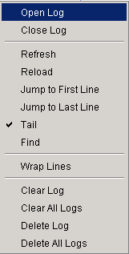

|

|
- Open Log: open a log file.
- Close Log: close a log file.
-
- Refresh: useful if latency is set to a high number.
- Reload: same as close then open.
- Jump to First Line
- Jump to Last Line
- Tail: toggles auto scroll on and off for the current log.
- Find: display a "find" dialog.
-
- Wrap Lines: in table view, wraps cell contents.
-
- Clear Log: just clears the log window, does not alter the log file.
- Clear All Logs: clears all log windows, does not alter the log files.
- Delete Log: deletes the current log file from disk.
- Delete All Logs: deletes all open log files from disk.
|